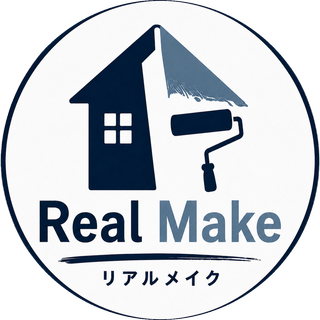
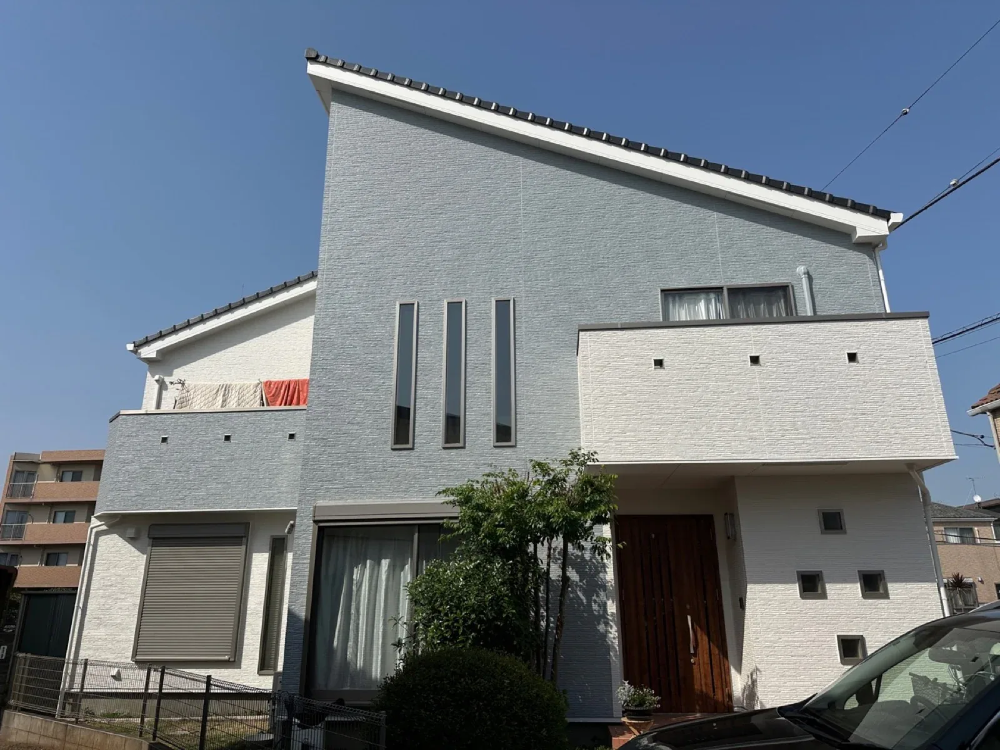

埼玉県桶川市のリフォーム会社Real Make（リアルメイク）
桶川市のリフォーム・外壁塗装
外壁・屋根塗装を中心に、水まわり・内装・窓まわり・小さな修繕まで、住まいのご相談をまとめて受け付けています。代表の大川が現場を直接管理します。

ホームページを見る LINEで相談する 電話で相談する（090-1434-0189）- 屋号
- Real Make（リアルメイク）
- 代表
- 大川 亮太
- 所在地
- 埼玉県桶川市上日出谷南2-1-19
- 受付時間
- 8:00〜18:00
- 対応地域
- 桶川市を中心に、北本市・上尾市など周辺地域